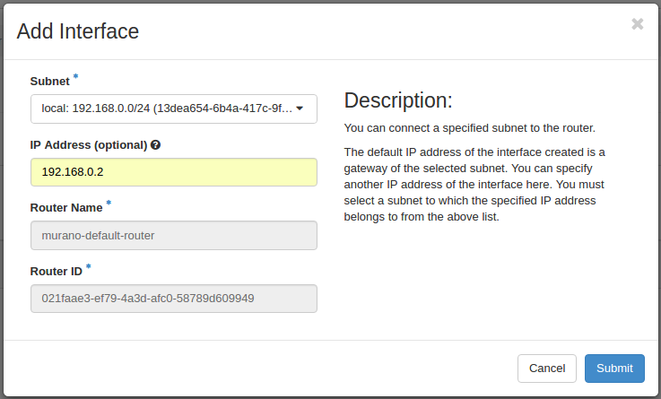
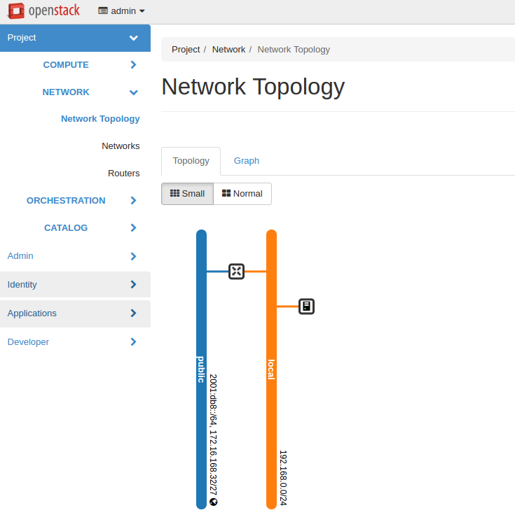

Configuration¶
Network configuration¶
Murano may work in various networking environments and is capable of detecting the current network configuration and choosing appropriate settings automatically. However, some additional actions are required to support advanced scenarios.
Nova-network support¶
Nova-network is the simplest networking solution, which has limited capabilities but is available on any OpenStack deployment without the need to deploy any additional components.
When a new murano environment is created, murano checks if a dedicated networking service, for example, neutron, exists in the current OpenStack deployment. It relies on the Identity service catalog for that. If such a service is not present, murano automatically falls back to nova-network. No further configuration is needed in this case, all the VMs spawned by Murano will be joining the same network.
Neutron support¶
If neutron is installed, murano enables its advanced networking features that give you the ability to avoid configuring networks for your application.
By default, it creates an isolated network for each environment and joins all VMs needed by your application to that network. To install and configure the application in a newly spawned virtual machine, murano also requires a router to be connected to the external network.
Automatic neutron configuration¶
To create the router automatically, provide the following parameters in the configuration file:
[networking]
external_network = %EXTERNAL_NETWORK_NAME%
router_name = %MURANO_ROUTER_NAME%
create_router = true
To figure out the name of the external network, run openstack network list --external.
During the first deployment, the required networks and router with a specified name will be created and set up.
Manual neutron configuration¶
To configure neutron manually, follow the steps below.
Create a public network.
- Log in to the OpenStack dashboard as an administrator.
- Verify the existence of external networks. For this, navigate to .
- Check the network type in network details. For this, navigate to and see the Network name section. Alternatively, run the openstack network list --external command using CLI.
- Create a new external network as described in the OpenStack documentation.
Create a local network.
- Navigate to .
- Click Create Network and fill in the form.
Create a router.
Navigate to .
Click Create Router.
In the Router Name field, enter murano-default-router. If you specify a name other than murano-default-router, change the following settings in the configuration file:
[networking] router_name = %SPECIFIED_NAME% create_router = false
Click Create router.
Click the newly created router name.
In the Interfaces tab, click Add Interface.
Specify the subnet and IP address.
Verify the result in .

{kind=link}
{kind=link}
{kind=link}
Policy configuration¶
Like each service in OpenStack, murano has its own role-based access policies
that determine who and how can access objects. These policies are defined
in the service’s policy.json file.
On each API call corresponding policy check is performed.
policy.json file can be changed whiteout interrupting the API service.
For detailed information on policy.json syntax, please refer to the
OpenStack official documentation
With this file you can set who may upload packages and perform other operations.
The policy.json example is:
{
// Rule declaration
"context_is_admin": "role:admin",
"admin_api": "is_admin:True",
"default": "",
// Package operations
"get_package": "rule:default",
"upload_package": "rule:default",
"modify_package": "rule:default",
"publicize_package": "rule:admin_api",
"manage_public_package": "rule:default",
"delete_package": "rule:default",
"download_package": "rule:default",
// Category operations
"get_category": "rule:default",
"delete_category": "rule:admin_api",
"add_category": "rule:admin_api",
// Deployment read operations
"list_deployments": "rule:default",
"statuses_deployments": "rule:default",
// Environment operations
"list_environments": "rule:default",
"list_environments_all_tenants": "rule:admin_api",
"show_environment": "rule:default",
"update_environment": "rule:default",
"create_environment": "rule:default",
"delete_environment": "rule:default",
// Environment template operations
"list_env_templates": "rule:default",
"create_env_template": "rule:default",
"show_env_template": "rule:default",
"update_env_template": "rule:default",
"delete_env_template": "rule:default",
// Control on executing actions on deployment environments
"execute_action": "rule:default"
}
So, changing "upload_package": "rule:default" to "rule:admin_api"
will forbid regular users to upload packages.
For reference:
"get_package"is checked whenever a user accesses a package from the catalog. default: anyone"upload_package"is checked whenever a user uploads a package to the catalog. default: anyone"modify_package"is checked whenever a user modifies a package in the catalog. default: anyone"publicize_package"is checked whenever a user is trying to make a murano package public (both when creating a new package or modifying an existing one). default: admin users"manage_public_package"is checked whenever a user attempts to modify parameters of a public package. default: admin users"delete_package"is checked whenever a user attempts to delete a package from the catalog. default: anyone"download_package"is checked whenever a user attempts to download a package from the catalog. default: anyone"list_environments_all_tenants"is checked whenever a request to list environments of all tenants is made. default: admin users"execute_action"is checked whenever a user attempts to execute an action on deployment environments. default: anyone
Uploading package wizard in murano dashboard consists of several steps. Upload package API call requested from the first form and modify from the second one. It provides modifying package parameters on time of uploading. So, please modify both configuration together. Otherwise it will not be possible to browse package details on the second step of the wizard.